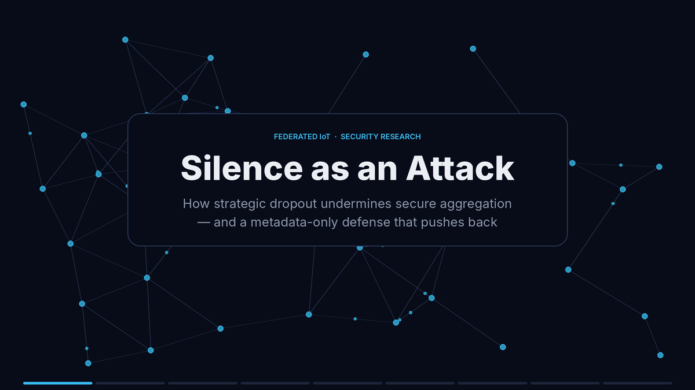

Mustafa A. Azzawi is a computer science researcher and technology professional with academic
and professional experience in machine learning, Internet of Things, healthcare technology,
network communication, and AI-driven systems.
His academic background includes Computer Science and Mathematics, followed by a Master of
Science in Computer Science and Technology advised by Prof. Rosilah Hassan, with a specialization in Network Technology from
the National University of Malaysia.
Mustafa's research interests focus on applying artificial intelligence, machine learning,
IoT, and network technologies to real-world problems, especially secure healthcare systems,
smart infrastructure, and real-time predictive applications.
Open to collaboration, co-authorship, and academic sponsorship discussions while preparing
for a PhD application.
Research Focus
IoT security and lightweight authentication
Machine learning–based network intrusion and anomaly detection for resilient IoT systems
Healthcare IoT, real-time monitoring, and predictive systems
Privacy-preserving and federated machine learning
Academic & Professional Background
Academic research in networking, IoT, and machine learning, with publications since
2016. Professionally, working with Accenture Technology Solutions on Google Trust and
Safety operations, and with Salla as a Quality Engineering Lead, built solid experience
in quality assurance, policy compliance, testing workflows, KPI dashboards, training,
and AI-supported content classification. Hands-on, practical work with large language
models (LLMs), staying current with new models and tools, alongside ongoing networking
labs that keep core networking and security skills sharp.
Current Work
In progress
Strategic Dropout Against Dropout-Tolerant Secure Aggregation in Federated IoT: Attacks,
Measurement, and a Metadata-Only Defense

Animated overview of the study.
Secure aggregation lets a federated IoT platform learn from many devices while seeing only
their combined result, and dropout tolerance keeps that process running when devices fail.
This work asks what happens when dropout stops being accidental: an adversary that simply
stays silent, sending nothing malicious, can stall training or quietly erase the
contributions of chosen groups without breaking any privacy guarantee. The project measures
this threat across protocols and workloads, and develops a defense that relies only on
participation metadata, never on inspecting device updates.
Education
2015 - 2017
Master of Science, Computer Science & Technology
National University of Malaysia (UKM), specialization in Network Technology.
2010 - 2014
Bachelor of Science, Computer Science & Mathematics
University of Tikrit, with focus areas in computer communications and algorithms.